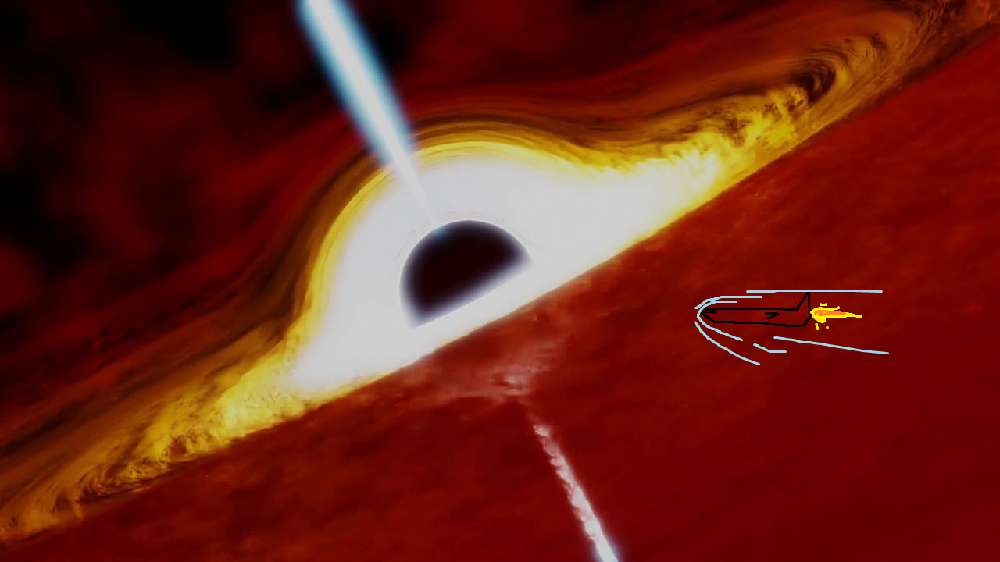

Hyperblog
Tu blog de cabecera
Hyperblog
Tu blog de cabecera
Este es el título actractivo e intereante del post
Y este es el párrafo de inicio domde vamos a explicar las cosas increíbles que se pueden hacer con ramas

Los blogs son la mejor forma de compartir información y tus ideas. Mucho mas que ir a conferencias o salir en Youtube. Excepto si eres un rockstar. Pero estadísticamente no los eres... por ahora :)
Suscribete y dale like Crack.